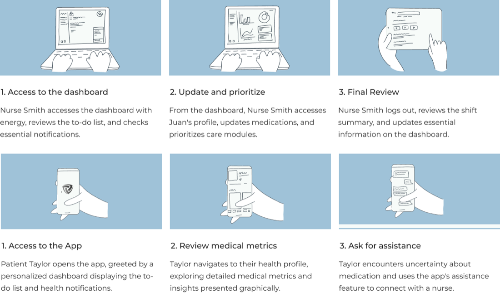
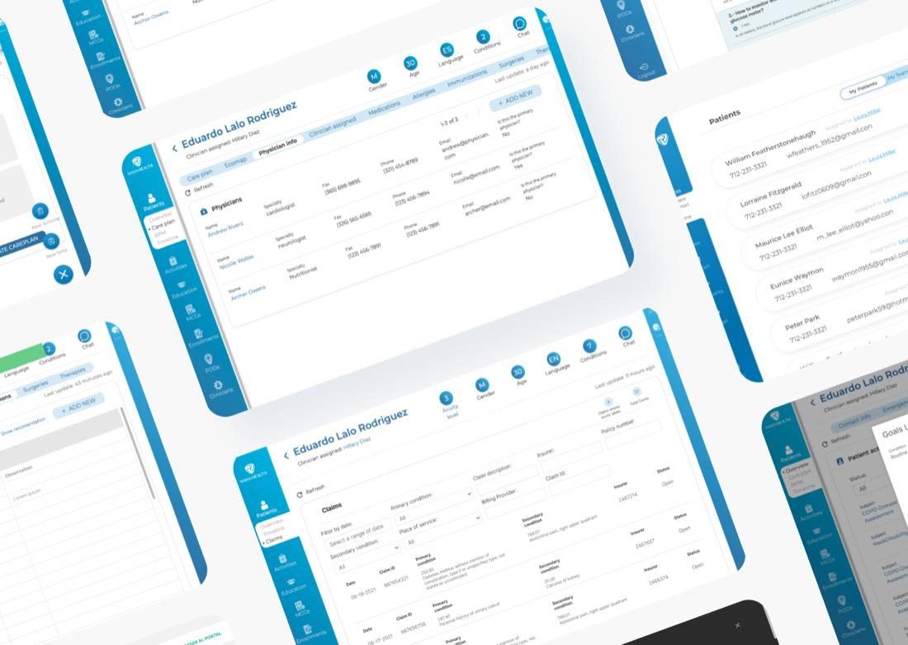
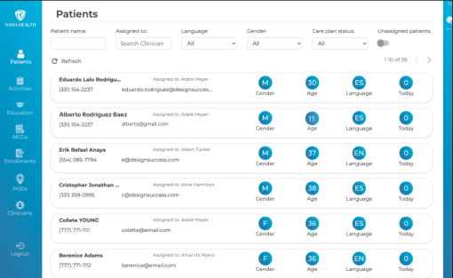
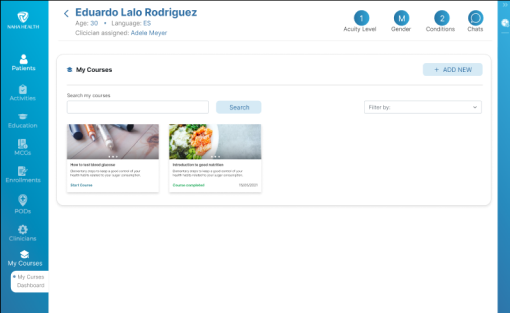
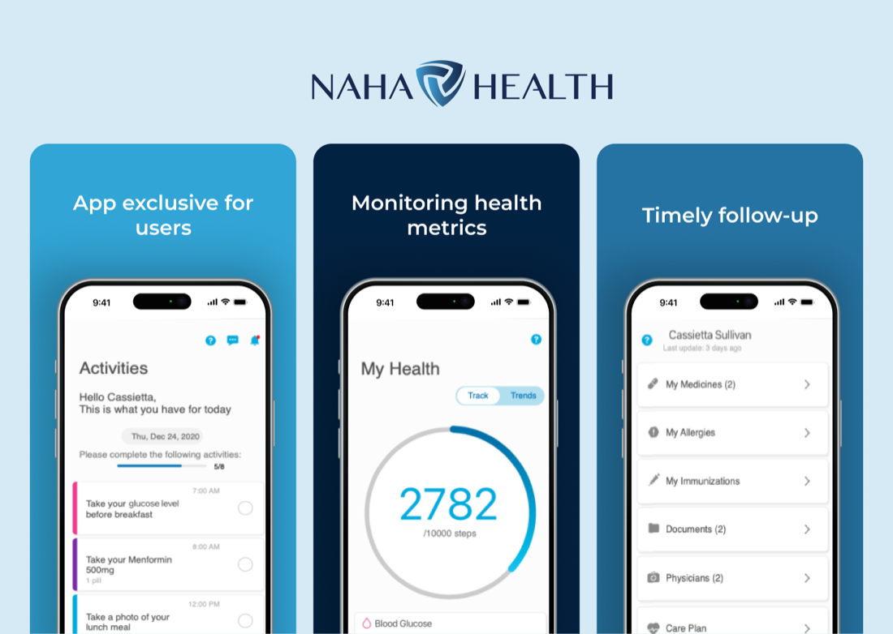

A redesign of Naha Health's medical platform: a care dashboard for nurses and an app for patients, to raise patient satisfaction and make staff more efficient.
Including follow-up
Patients, nurses, and admins surveyed
Focus groups of ten participants
Of providers wanted an integrated platform
Low patient and family satisfaction, and medical staff who needed better coordination and efficiency.
Mixed research, personas and journeys, storyboards, wireframes, and usability studies in eleven weeks.
A nurse dashboard with care plans and courses, and a patient app for activities, metrics, and follow-up.
Empathize
GoalUnderstand both sides of care: patients and medical personnel.
- Surveys to 460 patients, 60 nurses, and 40 administrators, by email, with consent.
- 5 focus groups of ten people, 60–90 minutes, guided by real scenarios.
- Analysis: transcription, categorization, patterns, and recommendations.
Medication management
Treatment plan integration
Care coordination dashboard
Educational resource library
Remote monitoring
Secure login
Training & onboarding
Roles for managers
Define
GoalTwo users, two products: a dashboard for staff and an app for patients.
- Pain
- Time lost on admin tasks; hard to reach accurate records.
- Goal
- More time for patients and better clinical decisions.
- Pain
- Tracking medication, missing appointments, and keeping his diet.
- Goal
- Keep his diabetes under control.
Ideate
GoalVisualize a day for each user before drawing a single screen.
I need a patient control dashboard to access history and treatment plans for informed care.
I need to know how prepared my colleagues are to give medical attention.
I want an educational library to learn about my health and treatments.

Prototype
GoalLow-fi wireframes to hi-fi screens with a medical, trustworthy feel.
#00A5D3#2378A8#022242#69CD88Montserrat, semibold and regular, with clear state colors.

Key features
GoalOne platform for care teams, one app for patients.
Patient and nurse management
Contact data, notes, and documents, with a central database for assigning nurses.

Courses and training
Access and track relevant courses for continuous development.


Care, better coordinated
OutcomePatients valued the care plan, and nurses called the dashboard transformative for their daily work.
Care plan
Greatly valued, with personalized educational content to follow treatments.
Control dashboard
Transformative in daily tasks, streamlining work and coordination.
More interaction
Quizzes and video resources in educational content.